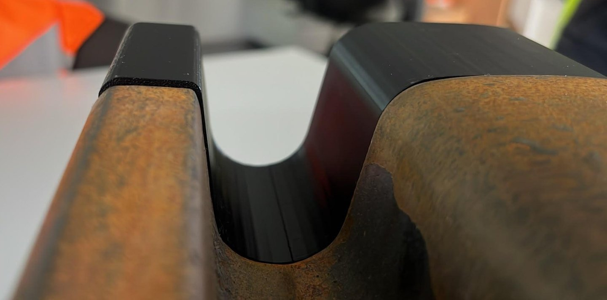
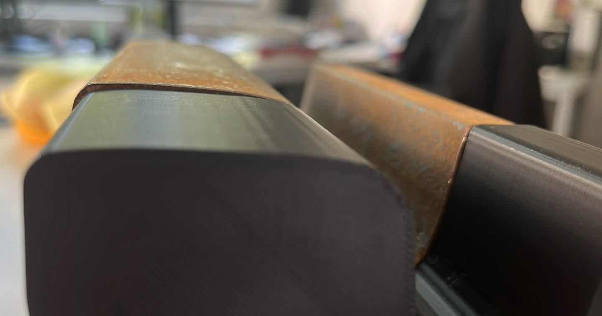
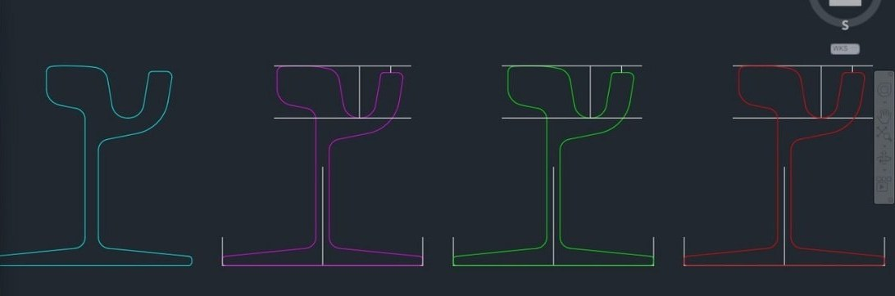
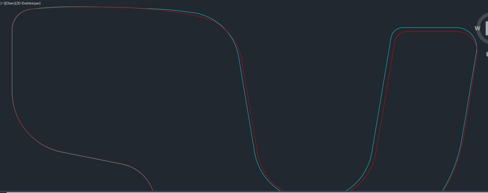
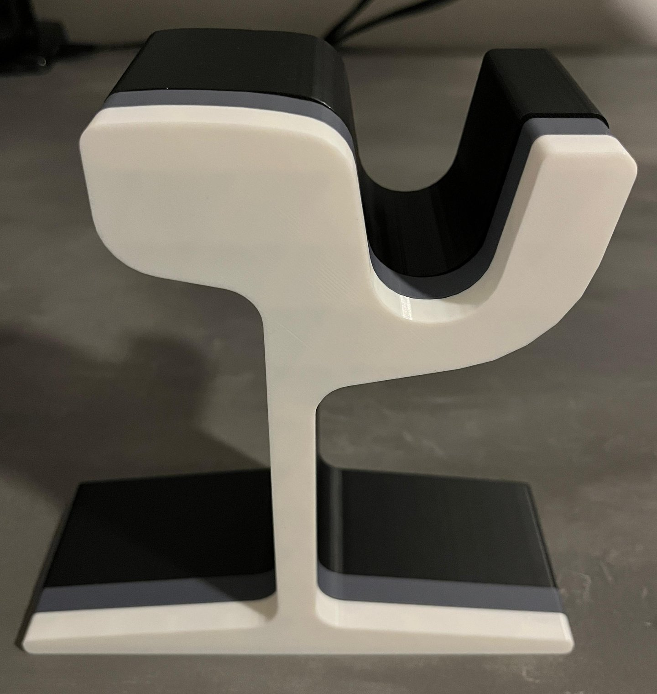
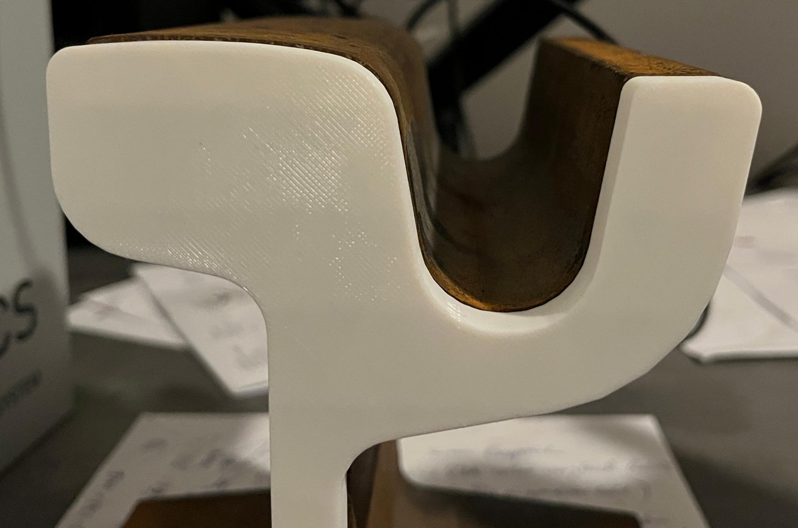
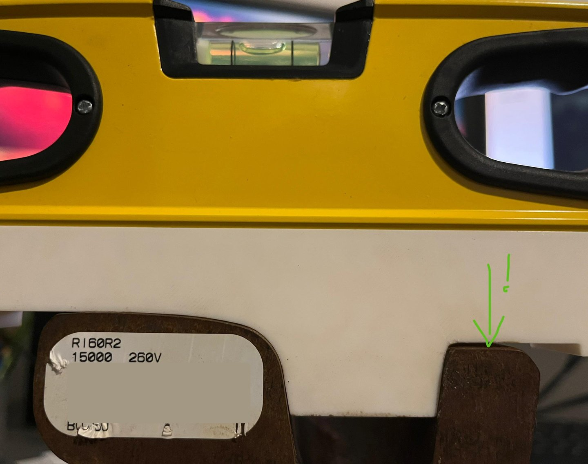
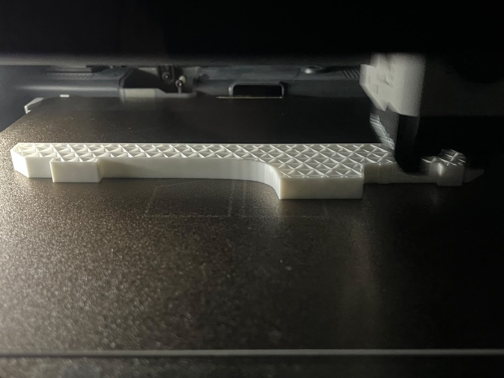

Measuring gauge for checking the height of the joint sealant on grooved tram rails in Leipzig (profile 60R2)
Background
After molten joint sealant overflowed in the hot weeks of summer 2026 and caused damage, an additional method was needed for checking the height of the longitudinal sealant along the rails. This additional check applies to inspections during construction supervision and to the requirements of Leipzig's transit operator LVB for newly built track sections with the above-mentioned rail profile 60R2 (former designation Ri 60 N).
Sealant height: 5 mm below the highest point of the running surface, 3 mm below the top of the guard
Strip width: 55–60 mm on the running-surface side, 30–35 mm on the guard side
First draft
Starting from an existing DWG of the rail profile contour, I exported an STL and first printed a 50 mm long test piece of rail. The first simple prototypes followed, each 25 mm deep.
For a quick draft, the same settings were used for all pieces (2 perimeters, 10 % infill with the “Adaptive Cubic” pattern, PLA). The gauge prototypes sit level on the printed rail but not on a piece of steel rail, as the following picture shows:

Checking the first printed profile against the profile of the steel rail reveals considerable deviations:


Reconstruction
Using the dimensioned drawing from the manufacturer voestalpine (publicly available on the product page), and ultimately also the dimensioned drawing from DIN EN 14811 (2019), the profile was reconstructed iteratively in AutoCAD:

After the fillets in particular had been corrected in the last step, an overlay of the profile contours shows the deviations quite clearly:



Compensating for manufacturing tolerances
Once the profile matched the dimensioned drawing, a further deviation became apparent:

That the profile contour was now correct could be verified by comparing it with an original DXF file provided by the manufacturer. Nevertheless, when held horizontally, the gauge made to the profile contour rests only on the running surface and not on the guard (see previous picture).
The running-surface side of the head, which is particularly subject to wear, has extra material that benefits the rail's service life. To compensate for this, a 0.65 mm high bar was added to the gauge to rest on the guard.
The measuring bar for the distance to the sealant on the guard side was lengthened accordingly.

Specifics of the latest version
On the resulting gauge, the measuring bars are positioned roughly in the middle of the sealant strips (depending on strip width). Dimensions are given as length/width, height and depth. The measuring bar on the running-surface side is 20 mm wide and the one on the guard side is 10 mm wide. In the middle, each measuring bar is 0.1 mm higher than the specified distance to the sealant, to compensate for the slightly concave shape of the sealant after curing. The overall width of the gauge also makes it possible to check from above whether the intended width of the longitudinal sealant strips (generally max. 60 mm from the outer edge of the rail head on the running-surface side and 35 mm from the outer edge of the guard) has been kept. So far, the gauges have been printed in white, which makes rust rubbed off the rail visible on them and reveals areas under particular load or abrasion, even with careful use. As with the first prototypes, the depth is 25 mm. For greater stability in outdoor use, 3 perimeters and 25 % infill (Adaptive Cubic) were chosen. The tolerance of the printer setup used (model, print head, nozzle) is between 0.05 and 0.3 mm, depending on the axis. The following picture shows the latest version of the gauge during printing:

For a future version, feedback from field use is being collected, and the plan is to increase the height of the bar that rests on the guard from 0.65 to 0.7 mm.